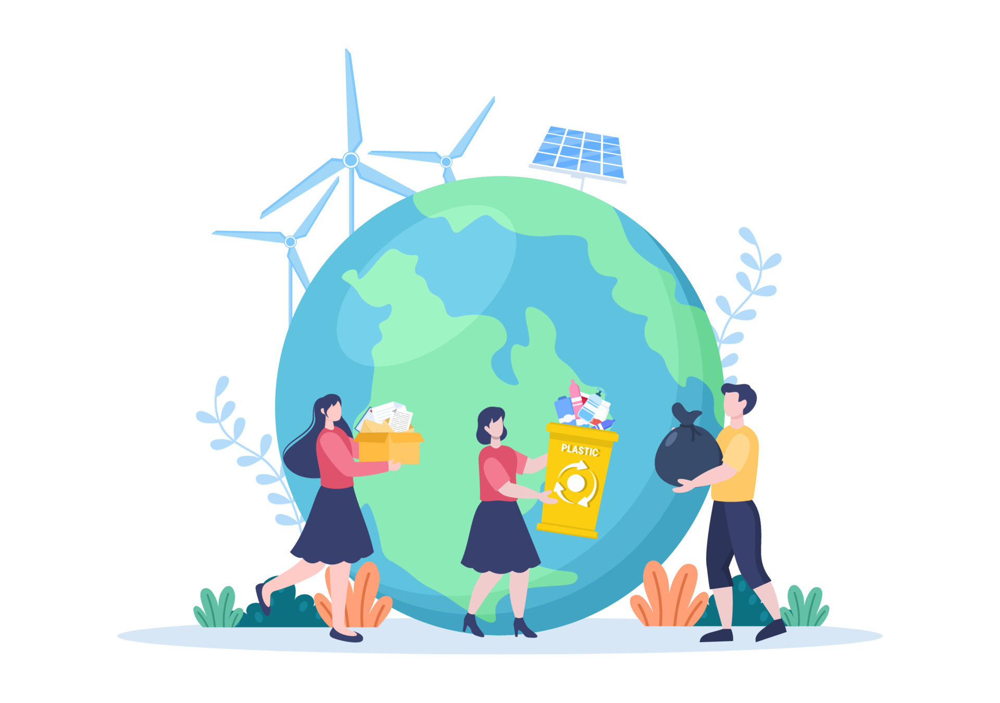

Como identificar os lixos?
Os recicláveis devem ser descartados em lixeiras coloridas (plástico, papel, metal e vidro) e os não recicláveis, normalmente, em lixeira cinza. Tanto as lixeiras de recicláveis quanto as lixeiras de não recicláveis devem ser etiquetadas como “resíduo comum”.

como saber se meu lixo e reciclável?

Para identificar se uma embalagem é reciclável ou não, basta verificar as informações contidas nela. As embalagens recicláveis apresentam o símbolo universal da reciclagem, que é formado por três setas, formando um triângulo.
Onde colocar lixo reciclável?